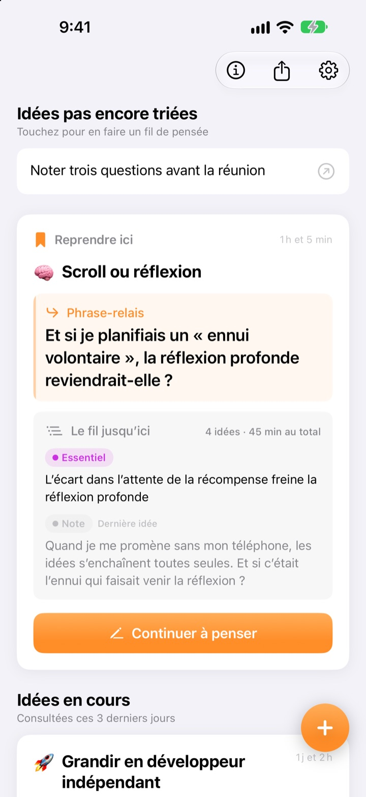
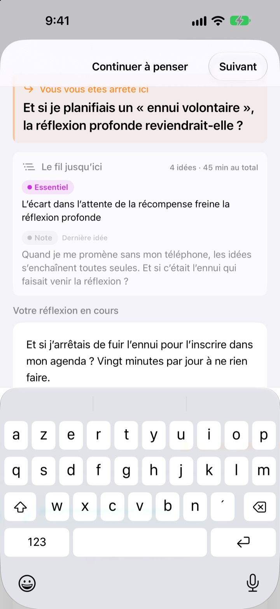
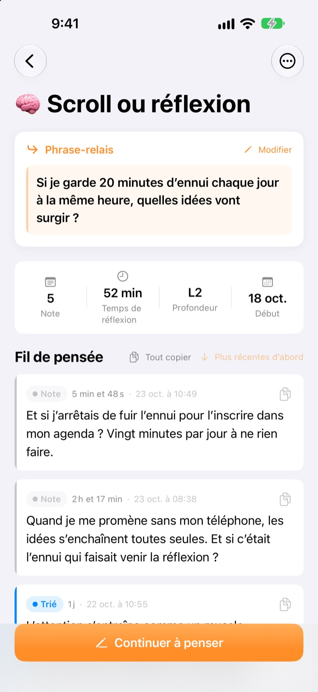
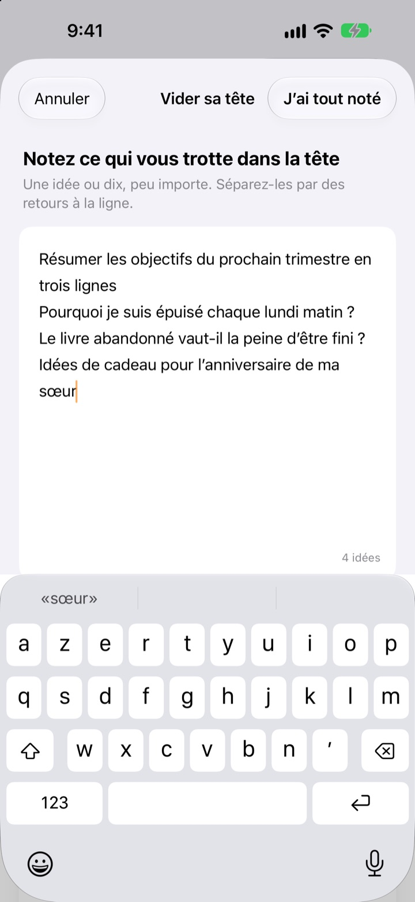

L’idée d’hier restée en suspens,
reprise aujourd’hui au même endroit
Quand vous arrêtez de réfléchir, laissez une ligne pour la suite. À la prochaine ouverture, elle vous attend tout en haut.
Toutes les fonctions sont gratuites. Sans compte, tout reste sur votre appareil.

Laissez une phrase-relais
Écrivez une idée, puis laissez la phrase par laquelle vous reprendrez. Les étapes sont les mêmes que dans l’app.
Où est-ce que j’en étais, déjà ?
Vous rouvrez une note de la semaine dernière et n’y trouvez que quelques conclusions, pas la question que vous comptiez creuser ensuite. Alors vous repartez de zéro. ThinkFlow vous fait noter cette question au moment d’arrêter, pour que vous repartiez d’elle dès votre retour.
Votre phrase-relais vous attend en haut
Terminez une séance par une seule ligne : la question à reprendre. À votre retour, cette phrase, l’essentiel jusqu’ici et votre dernière idée tiennent sur une seule carte. Rien à reconstituer.
Elle apparaît aussi dans un widget de l’écran d’accueil, et pendant que vous réfléchissez, le temps défile sur l’écran verrouillé et dans la Dynamic Island.

De la note à l’essentiel
Faites monter chaque idée sur quatre niveaux : note, trié, essentiel et résumé. Vous voyez d’un coup d’œil à quel point elle a mûri.
Ce que vous avez cherché ou demandé se joint comme référence, à part de vos propres idées.

D’abord, videz-vous la tête
Notez tout ce qui vous trotte dans la tête, une ligne par idée, puis choisissez celle à travailler maintenant : elle devient un fil. Le reste attend sur l’écran d’accueil jusqu’à ce que vous le touchiez.
Les idées que vous n’avez pas touchées depuis plus de trois jours se retrouvent dans Idées à ranimer.

Trois étapes pour commencer
- 1
Videz votre tête
Une ligne par idée, puis choisissez celle qui mérite d’être creusée.
- 2
Poursuivez
Ajoutez chaque nouvelle idée à part pour l’affiner plus facilement ensuite.
- 3
Laissez la phrase et fermez
La prochaine fois, vous repartez de là.
Niveau d’affinage
- Note
- Idée brute
- Trié
- Trié une fois
- Essentiel
- L’essentiel seulement
- Résumé
- Résumé final
Touchez le badge de niveau à côté d’une idée pour le changer. L’essentiel et les résumés s’affichent en premier sur la carte à votre retour.
Votre phrase-relais vous attend en haut
Dois-je forcément écrire une phrase-relais ?
Si vous avez ajouté quelque chose, oui : l’écran Continuer à penser ne se ferme qu’une fois la ligne suivante laissée. Si vous n’avez rien écrit, fermez-le simplement. L’astuce : s’arrêter quand on a encore des choses à dire, pas quand on bloque.
Que sont les Idées à ranimer ?
Les fils que vous n’avez pas ouverts depuis plus de trois jours sont regroupés à part sur l’écran d’accueil. Une idée presque oubliée peut ainsi repartir de sa phrase-relais.
Comment signaler un bug ou proposer une idée ?
Utilisez Envoyer un commentaire dans les réglages de l’app, écrivez à l’adresse ci-dessous ou ouvrez un ticket sur github.com/M1zz/ThinkFlow/issues. Tout retour est bienvenu.
Tout est vraiment gratuit ?
Oui. Toutes les fonctions sont gratuites, sans publicité ni compte. « Soutenir le développeur » dans les réglages est entièrement facultatif et ne débloque rien.
Une question, une suggestion ? Écrivez à leeo@kakao.com.